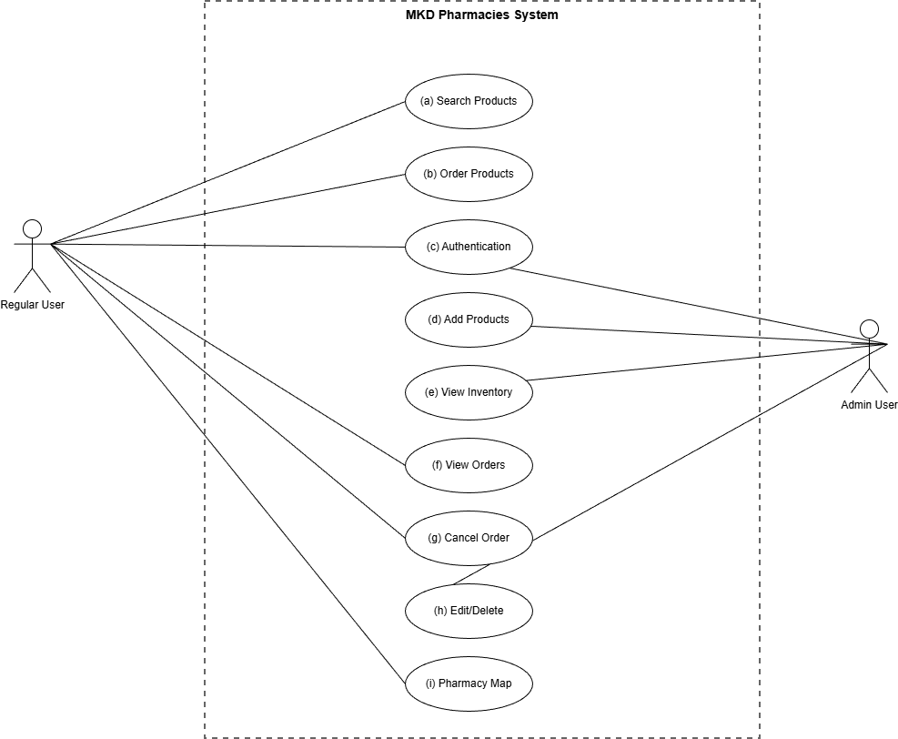
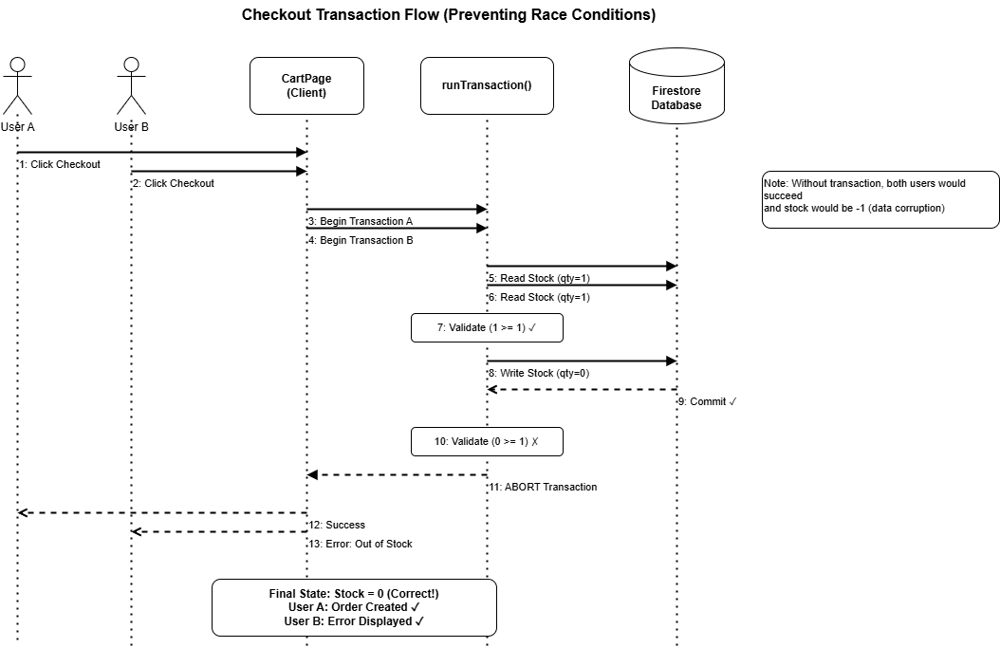
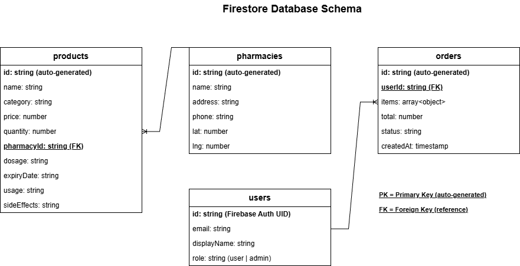
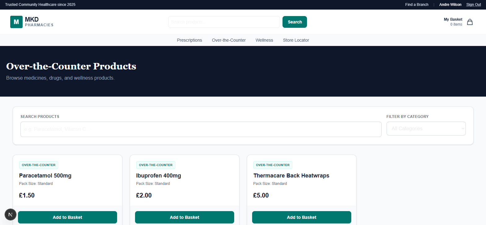
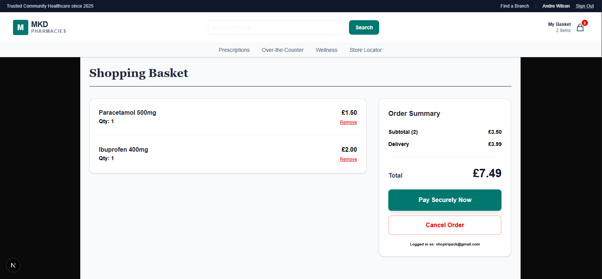
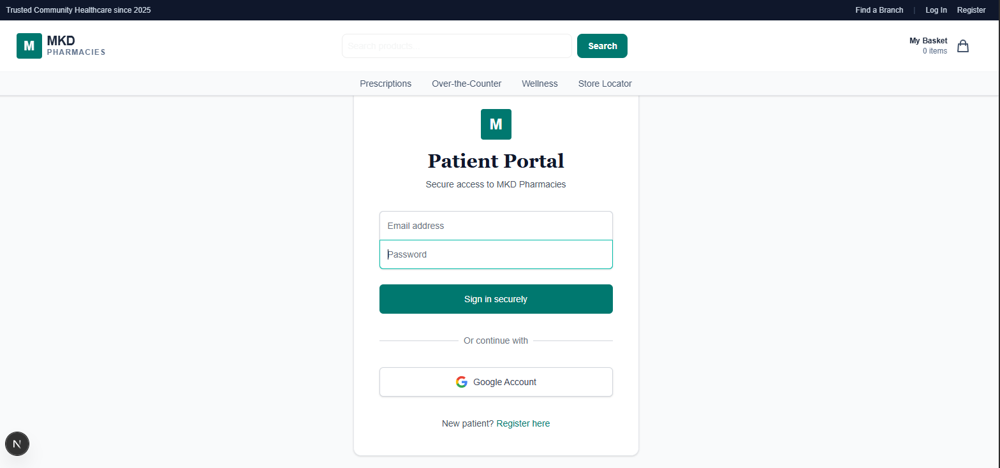
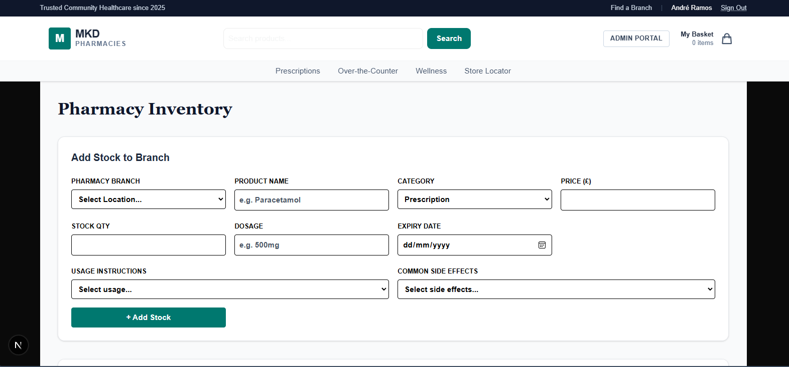
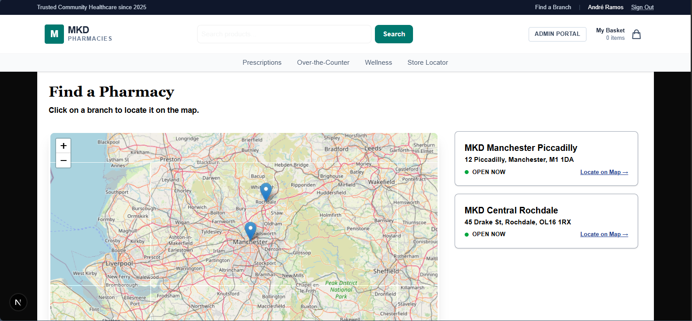

Overview
MKD Pharmacies is a full-stack web application for browsing products, managing pharmacy stock, and supporting location-aware ordering across multiple branches. The project combines system design work with a working implementation covering customer journeys, admin operations, and stock-safe checkout behaviour.
The codebase includes `src/actions` for server-side mutations, `src/context` for authentication and basket state, `src/components/admin` for stock management, and a map module for branch discovery. The resulting project shows more than a frontend mock-up because it connects interface work to stock validation, role-based access, and multi-location ordering logic.
What Was Built
- Product browsing with category filtering, keyword search, and add-to-basket interactions.
- A basket and checkout flow with Firestore transaction logic to prevent overselling stock.
- Firebase-backed sign-in and role-aware navigation for regular users and admins.
- An admin inventory interface for creating and managing branch-specific products.
- A branch locator page with a pharmacy map and location-aware stock browsing flow.
Technical Evidence
- `src/actions/orders.js` uses `runTransaction` to validate current stock, update inventory, and create orders atomically.
- `src/actions/search.js` handles product search on the server rather than exposing a separate custom API layer.
- `src/context/CartContext.js` persists the basket in local storage and clears it when the user logs out.
- `src/components/map/MapWrapper.js` dynamically loads the map with `ssr: false` to avoid server-side rendering conflicts.
- `src/components/admin/AddProductForm.js` shows branch-aware product creation with dosage, expiry, usage, and side-effect fields.
Design and Architecture Value
- The design report mapped nine use cases across search, ordering, authentication, admin stock control, order history, cancellation, and branch discovery.
- The transaction sequence diagram adds genuine systems thinking by showing how concurrent checkout should fail safely when stock runs out.
- The Firestore schema links users, products, pharmacies, and orders into a clear operational data model.
- This makes the project useful in a portfolio because it demonstrates planning, implementation, and interface delivery together.
Portfolio Positioning
This is a strong full-stack portfolio piece for a junior web developer because it shows practical architecture choices rather than just page styling. The strongest public framing is an end-to-end healthcare ordering platform with secure login, admin tooling, stock-safe checkout, and branch discovery.
One report claim about raw Leaflet usage was not repeated here because the actual code imports `react-leaflet`. The page is written from the verified implementation and screenshots, not from unverified wording in the report.







